SHOPPER: Good Morning
AGENT: Hello anything i can help you with today?
SHOPPER: I need to look at some of your best light blue coloured trackwear for myself .
AGENT: Of course. Showing you, just a minute
AGENT:
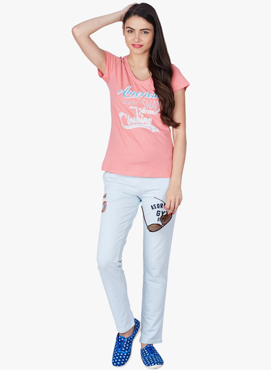
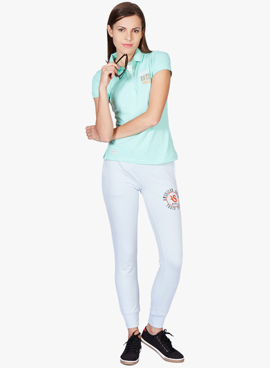
AGENT: See the 1st one, look stylish even when out for jogging, courtesy these light blue coloured track pants from as original.
SHOPPER: What is the length in the 1st and 2nd images?
AGENT: The length of the trackpants is full length in the 1st and 2nd image
SHOPPER: Which of the celebrities usually wear trackpants similar looking to the one in the 1st image?
AGENT: celebrities cel_2120,cel_49 and cel_8 endorse this kind of trackpants
SHOPPER: And as in the 2nd one?
AGENT: celebrities cel_49 and cel_255 endorse this kind of trackpants
SHOPPER: Will trackpants be suited for gentle wash?
AGENT: Yes
SHOPPER: Show me images of the 2nd result from all possible directions
AGENT: Image from the front,back and left view-points respectively
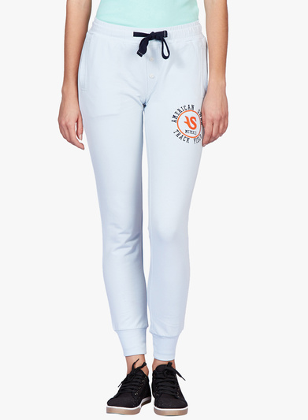
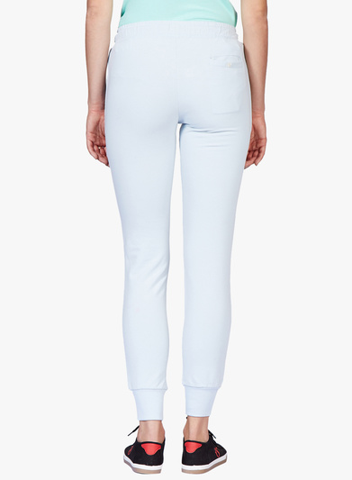
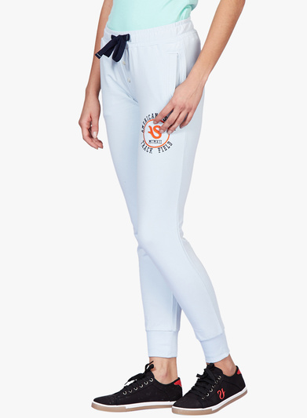
SHOPPER: Show me something similar to the 1st image but in a different length
AGENT: The similar looking ones are
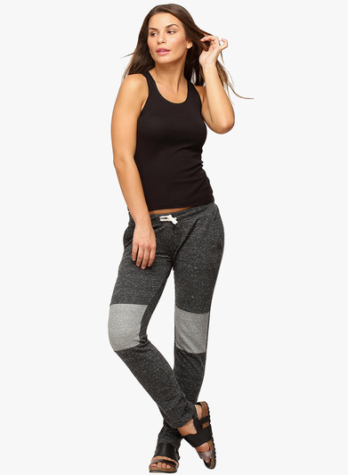
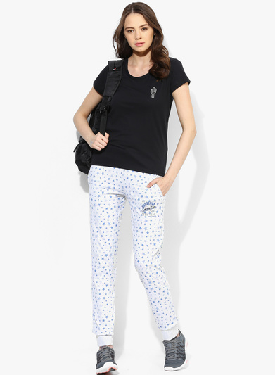
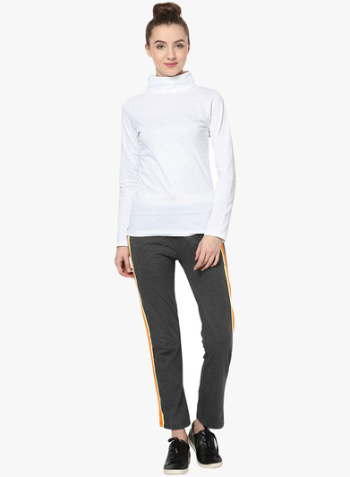
SHOPPER: Which of the celebrities usually wear similar looking trackpants as in the 2nd image?
AGENT: celebrity cel_3 endorses this kind of trackpants
SHOPPER: Show me some similar to the 2nd image
AGENT: The similar looking ones are
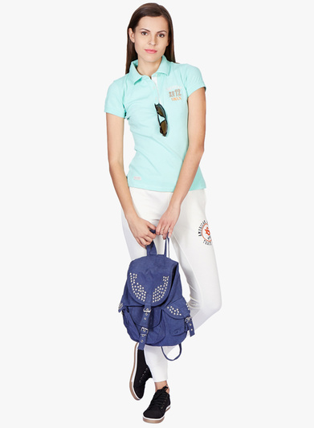
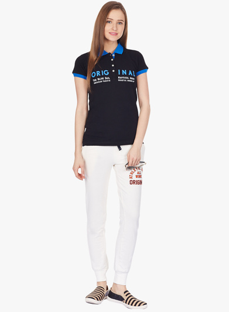
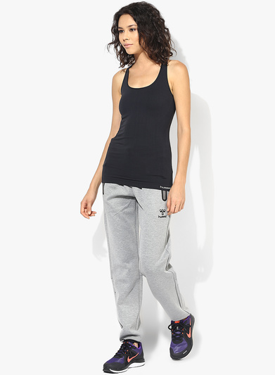
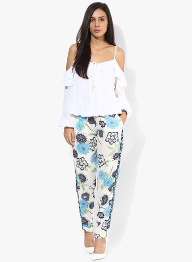
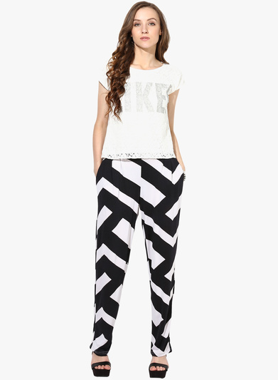
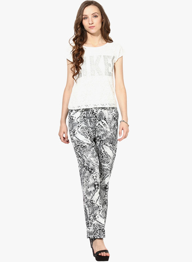
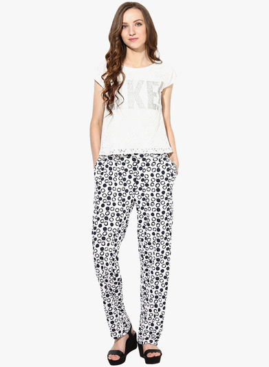
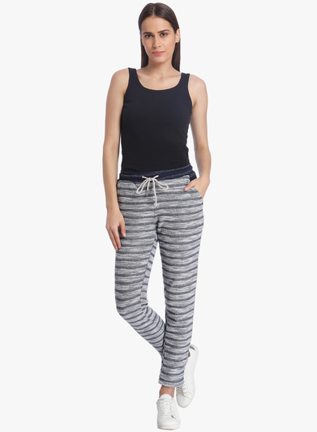
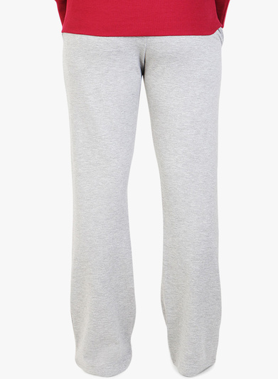
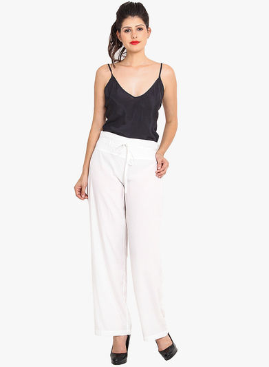
SHOPPER: What is the color and print in the 9th result?
AGENT: the trackpants in the 9th image has grey color solid print
SHOPPER: And how about color and length in the 4th one?
AGENT: the trackpants in the 4th image has white color full length
SHOPPER: So, do you think that a dark print tunic go with any of these
AGENT: 1st product will go well with it
SHOPPER: Will casual shirt make a good combination with trackpants?
AGENT: No
SHOPPER: ‘Can you show something similar to the 1st image?
AGENT: The similar looking ones are
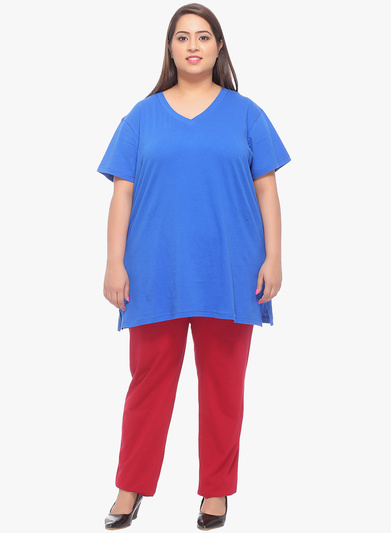
SHOPPER: I want to buy the 6th one
AGENT: Absolutely! Hope you had a great shopping experience